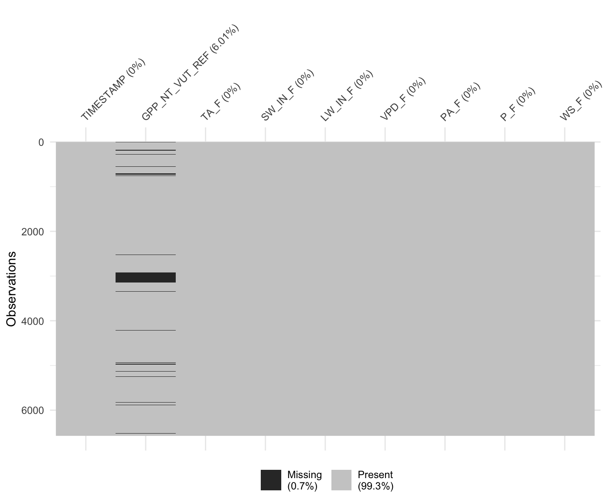

Chapter 4 Pre-processing
Skewed data, outliers, and values covering multiple orders of magnitude can create difficulties for certain ML algorithms, e.g., or K-nearest neighbours, or neural networks. Other algorithms, like tree-based methods (e.g., Random Forest), are more robust against such issues.
4.1 Dealing with missingness and bad data
Several ML algorithms require missing values to be removed. That is, if any of the cells in one row has a missing value, the entire cell gets removed. Data may be missing for several reasons. Some yield random patterns of missing data, others not. In the latter case, we can speak of informative missingness (Kuhn & Johnson, 2003) and its information can be used for predictions. For categorical data, we may replace such data with "none" (instead of NA), while randomly missing data may be dropped altogether. Some ML algorithms (mainly tree-based methods, e.g., random forest) can handle missing values. However, when comparing the performance of alternative ML algorithms, they should be tested with the same data and removing missing data should be done beforehand.
Visualising missing data is essential for making decisions about dropping rows with missing data versus removing predictors from the model (which would imply too much data removal). The cells with missing data in a data frame can be eaily visualised e.g. with vis_miss() from the visdat package.
library(visdat)
vis_miss(
ddf,
cluster = FALSE,
warn_large_data = FALSE
)
The question about what is “bad data” and whether or when it should be removed is often critical. Such decisions are important to keep track of and should be reported as transparently as possible in publications. In reality, where the data generation process may start in the field with actual human beings writing notes in a lab book, and where the human collecting the data is often not the same as the human writing the paper, it’s often more difficult to keep track of such decisions. As a general principle, it is advisable to design data records such that decisions made during its process remain transparent throughout all stages of the workflow and that sufficient information be collected to enable later revisions of particularly critical decisions.
4.2 Standardization
Several algorithms explicitly require data to be standardized. That is, values of all predictors vary within a comparable range. The necessity of this step becomes obvious when considering neural networks, the activation functions of each node have to deal with standardized inputs. In other words, inputs have to vary over the same range, expecting a mean of zero and standard deviation of one.)
To get a quick overview of the distribution of all variables (columns) in our data frame, we can use the skimr package.
library(skimr)
knitr::kable(skim(ddf))| skim_type | skim_variable | n_missing | complete_rate | Date.min | Date.max | Date.median | Date.n_unique | numeric.mean | numeric.sd | numeric.p0 | numeric.p25 | numeric.p50 | numeric.p75 | numeric.p100 | numeric.hist |
|---|---|---|---|---|---|---|---|---|---|---|---|---|---|---|---|
| Date | TIMESTAMP | 0 | 1.0000000 | 1997-01-01 | 2014-12-31 | 2005-12-31 | 6574 | NA | NA | NA | NA | NA | NA | NA | NA |
| numeric | GPP_NT_VUT_REF | 395 | 0.9399148 | NA | NA | NA | NA | 3.218728 | 2.7569372 | -4.22996 | 0.7730585 | 2.87334 | 5.44718 | 12.2567 | ▁▇▆▃▁ |
| numeric | TA_F | 0 | 1.0000000 | NA | NA | NA | NA | 3.517397 | 6.6562542 | -21.92400 | -1.5565000 | 3.44450 | 8.72200 | 20.6870 | ▁▂▇▇▂ |
| numeric | SW_IN_F | 0 | 1.0000000 | NA | NA | NA | NA | 150.785747 | 85.0156424 | 3.30300 | 78.2630000 | 136.67700 | 215.54125 | 365.8880 | ▆▇▆▅▂ |
| numeric | LW_IN_F | 0 | 1.0000000 | NA | NA | NA | NA | 269.771156 | 41.9073945 | 138.12500 | 239.3937500 | 272.62150 | 303.36150 | 364.9070 | ▁▃▇▇▂ |
| numeric | VPD_F | 0 | 1.0000000 | NA | NA | NA | NA | 2.865737 | 2.3936778 | 0.00100 | 0.9950000 | 2.23900 | 4.05775 | 16.5650 | ▇▃▁▁▁ |
| numeric | PA_F | 0 | 1.0000000 | NA | NA | NA | NA | 83.564688 | 0.7261651 | 80.37300 | 83.1600000 | 83.68300 | 84.07200 | 85.6330 | ▁▁▅▇▁ |
| numeric | P_F | 0 | 1.0000000 | NA | NA | NA | NA | 2.304499 | 5.7860345 | 0.00000 | 0.0000000 | 0.00000 | 1.60000 | 92.1000 | ▇▁▁▁▁ |
| numeric | WS_F | 0 | 1.0000000 | NA | NA | NA | NA | 1.991029 | 0.6604529 | 0.32800 | 1.5410000 | 1.92200 | 2.33900 | 6.5390 | ▃▇▁▁▁ |
We see for example, that typical values of LW_IN_F are by a factor 100 larger than values of VPD_F. KNN uses the distance from neighbouring points for predictions. Obviously, in this case here, any distance would be dominated by LW_IN_F and distances in the “direction” of VPD_F, even when relatively large, would not be influential, neither for a Euclidean nor a Manhattan distance (see 2). In neural networks, activation functions take values in a given range (0-1). Thus, for both algorithms, data has to be standardized prior to model training.
Standardization is done, for example, by dividing each variable, that is all values in one column, by the standard deviation of that variable, and then subtracting its mean. This way, the resulting standardized values are centered around 0, and scaled such that a value of 1 means that the data point is one standard deviation above the mean of the respective variable (column). When applied to all predictors individually, the absolute values of their variations can be directly compared and only then it can be meaningfully used for determining the distance.
Standardization can be done not only by centering and scaling (as described above), but also by scaling to within range, where values are scaled such that the minimum value within each variable (column) is 0 and the maximum is 1.
In order to avoid data leakage, centering and scaling has to be done separately for each split into training and validation data (more on that later). In other words, don’t center and scale the entire data frame with the mean and standard deviation derived from the entire data frame, but instead center and scale with mean and standard deviation derived from the training portion of the data, and apply that also to the validation portion, when evaluating.
The caret package takes care of this. The R package caret provides a unified interface for using different ML algorithms implemented in separate packages. The preprocessing steps applied with each resampling fold can be specified using the function preProcess(). More on resampling in Chapter 6.
library(caret)
pp <- preProcess(ddf_train, method = c("center", "scale"))As seen above for the feature engineering example, this does not return a standardized version of the data frame ddf. Rather, it returns the information that allows us to apply the same standardization also to other data sets. In other words, we use the distribution of values in the data set to which we applied the function to determine the centering and scaling (here: mean and standard deviation).
4.3 More pre-processing
Depending on the algorithm and the data, additional pre-processing steps may be required. You can find more information about this in the great and freely available online tutorial Hands-On Machine Learning in R.
One such additional pre-processing step is imputation, where missing values are imputed (gap-filled), for example by the mean of each variable respectively. Also imputation is prone to cause data leakage and must therefore be implemented as part of the resampling and training workflow. The recipes package offers a great way to deal with imputation (and also all other pre-processing steps). Here is a link to learn more about it.